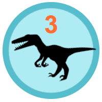
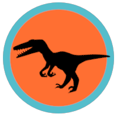
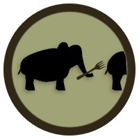
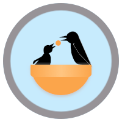
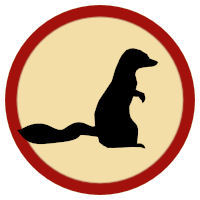

sboss
scott can code in numerous languages (to name a few) and the related user groups I visit:
coderwall page

Velociraptor 3
Have at least three original repos where Perl is the dominant language

Velociraptor
Have at least one original repo where Perl is the dominant language

Forked
Have a project valued enough to be forked by someone else

Charity
Fork and commit to someone's open source project in need

Mongoose
Have at least one original repo where Ruby is the dominant language